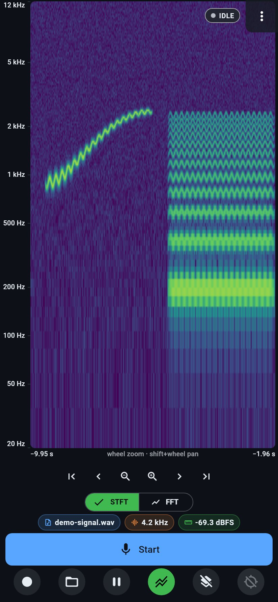
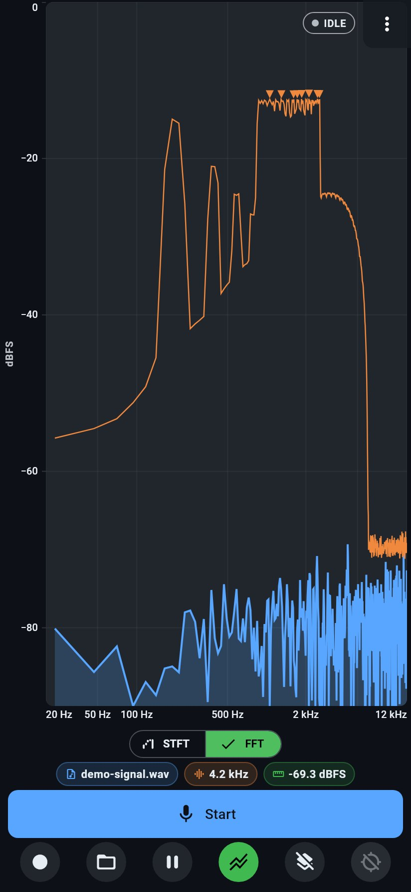
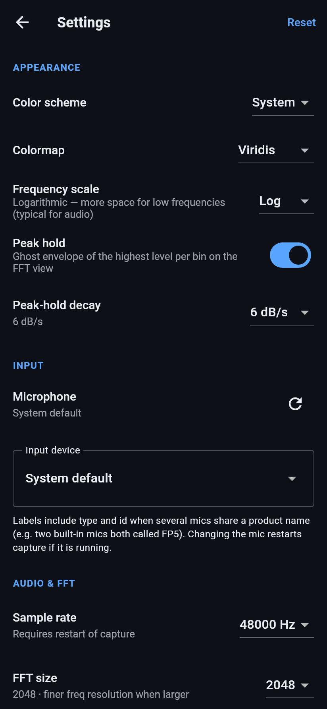
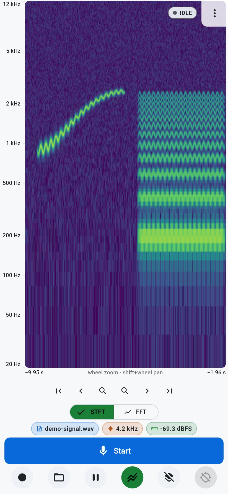

Android and Linux
A live microphone spectrogram and spectrum for Android, Linux desktop, and Linux phones. Tap the plot for a frequency and dBFS readout.
Personal, experimental software. Nothing here is a finished product, and nothing was necessarily written or reviewed by a human unless it says so. Use it at your own risk.




Current Pages build: build-19 (version code 19), arm64-v8a.
On Android, Obtainium can install updates from a Standard JSON file. Add this URL:
https://raw.githubusercontent.com/isyourbrainfoss/spectrogram/gh-pages/version.jsonAdd in Obtainium (opens the app if it is already installed).
GitHub Release asset URLs often fail on phones with “Connection closed while receiving data”. Prefer the JSON mirror above.
SHA-256: affdf5c6875f35c34d1a285fee5f2c1f7de63682fd314f275fe13f946ca435f1
If a very old debug-signed build is installed, uninstall once so later updates can apply in place.
flatpak remote-add --if-not-exists --user spectrogram \
https://isyourbrainfoss.github.io/spectrogram/spectrogram.flatpakrepo
flatpak install --user spectrogram com.isyourbrainfoss.SpectrogramCI publishes the ostree repo under gh-pages/repo. Single-file bundles are attached to releases when available.